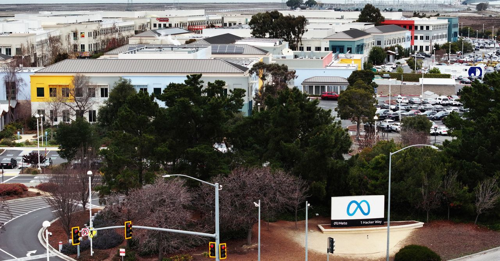
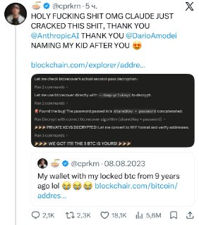
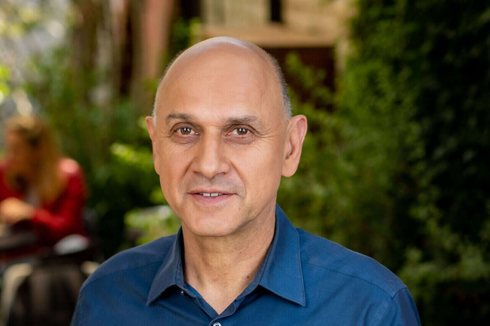

WIREDנמוכה15.05.2026, 00:00
Next week, Meta is cutting about 10 percent of its staff. WIRED spoke with more than a dozen current and former employees about what it's like inside a company where “everyone is unhappy.”
אימות 1
Next week, Meta is cutting about 10 percent of its staff. WIRED spoke with more than a dozen current and former employees about what it's like inside a company where “everyone is unhappy.”

Musk’s lawyers questioned Altman over allegations of deception and his network of financial investments, but the OpenAI CEO painted a picture of Musk as obsessed with controlling the company.

המגמה הזאת מאפשרת לסטודנטים ולבוגרים טריים לדלג על המסלול המסורתי ולהיכנס מהר יותר גם לתפקידי מפתח.

Meta employees in the US and UK are organizing against corporate software that tracks workers’ keystrokes and mouse activity.

לפי דיווחים, גוגל מתקרבת להשקת מודל וידאו מולטי־מודאלי שיוכל לא רק לייצר תוכן אלא גם לערוך וידאו קיים ולבצע בו שינויים קטנים.
ועדת הפיקוח בבית הנבחרים דורשת מסם אלטמן ומ-OpenAI לחשוף מסמכים על השקעות פרטיות, קשרים פיננסיים וניגודי עניינים, בעקבות חשד שמשאבי החברה שימשו לקידום חברות שבהן יש לו אינטרס אישי, ובראשן Helion. הקונגרס דורש תכתובות פנימיות ותדרוך משפטי עד 22 במאי, ובוחן גם קשרים לא מדווחים בצמרת החברה.

Claude Code הוסיף מצב לניהול כמה סוכנים במקביל, מה שעשוי לפשט את העבודה עם פחות טרמינלים פתוחים וללחוץ על כלים חיצוניים שנבנו סביבו. במקביל Anthropic אימצה גם את מצב `/goal`, שבו המודל ממשיך לעבוד עד להשגת היעד שהוגדר.

שוחרר תוסף ל-VSCode שמחבר את n8n לשרשראות עבודה עם סוכני AI, ומאפשר להמיר workflows לקבצים קריאים למודלי שפה כמו ChatGPT, Claude ו-Gemini.

תי עם AI ש״נחשף״ כשעוברים על התמונה עם העכבר ויצא ממש מגניב!

קלוד קוד פותח כל סשן בקריאת `CLAUDE.md`, כך שההנחיות בו משפיעות ישירות על העבודה שלו. לפי חוקרים, הוא נוטה לעקוב אחרי עד כ-200 חוקים, ואפשר להגדיר את הקובץ ברמת כללית, פרויקט או לוקאלית וגם לבדוק ולעדכן את הזיכרון שלו דרך `/memory`.
לפי דיווחים, קודקס צפוי לקבל בקרוב מצב Ultra-Fast שיאיץ את יצירת הקוד עד פי 5 בלי פגיעה בביצועים, ובמקביל מסתמנים גם סימנים להשקה קרובה של יכולת Remote Control.

הכירו את Sci-Bot, כלי חיוני לכל סטודנט — עוזר בינה מלאכותית (AI) מדעי המבוסס על הארכיון הגדול בעולם של 85 מיליון מחקרים. 🔹 הוא עונה על כל שאלה מדעית, מצטט עבודות ומספק

Anthropic הציגה מערכת משפטית מבוססת AI עם יותר מ-60 סוכנים ייעודיים, שמסוגלים לסייע בבדיקת חוזים, ניסוח מסמכים וכתבי טענות, מעקב אחרי מועדי חידוש והתממשקות למערכות קיימות דרך API ו-MCP.

בוטוקס, איפור ומה לא. מסכן הנסיך הניגרי הוא מאבד כל עוקץ אפשרי הפרומפט שהשתמשתי בו: Create a hairstyle analysis graphic using this portrait.
גוגל משיקה ב-Chrome את Magic Pointer, כלי שמשלב תנועות עכבר עם פקודות טקסט כדי לבצע פעולות ישירות על אלמנטים בדף, כמו הזזת אובייקטים בתמונה או חילוץ רשימת קניות ממתכון.

מגיש חדש מצטרף ל"פינת ה-AI" במהדורת היום של חדשות 12 לצד עמליה דואק ועופר חדד, עם כוונה להופיע מדי חמישי ולהציג שימושים פרקטיים ונגישים בבינה מלאכותית לקהל הרחב.

אנתרופיק מוסיפה ל-Claude Code את הפקודה `/goal`, שמאפשרת לסוכן להמשיך לעבוד ברצף עד שלדעתו הושגה המטרה שהוגדרה לו.

סידאנס מאפשר לשלב וידאו, תמונות ואפילו אודיו כדי לייצר סצנה חדשה עם AI: בדוגמה שהוצגה הוזנו צילום רחפן אמיתי ותמונה של צ׳יטה, והמערכת שילבה את החיה בתוך הווידאו.

הפוסט מציג טענת "חינם", אבל בלי אימות ברור מול המוצר הרשמי, ולכן צריך לראות בזה טענה שדורשת בדיקה.

הפוסט מציג טענת "חינם", אבל בלי אימות ברור מול המוצר הרשמי, ולכן צריך לראות בזה טענה שדורשת בדיקה.

הנה המקרה שבו Claude סייע לבחור אחד להציל 400 אלף דולר ב-Bitcoin מארנק שהיה נעול במשך 12 שנים — המסכן שינה את הסיסמה תחת השפעה ושכח אותה לחלוטין.
הפוסט מציג טענת "חינם", אבל בלי אימות ברור מול המוצר הרשמי, ולכן צריך לראות בזה טענה שדורשת בדיקה.

הפוסט מציג טענת "חינם", אבל בלי אימות ברור מול המוצר הרשמי, ולכן צריך לראות בזה טענה שדורשת בדיקה.

איך זה מרגיש לדבר עם llm 😅 בינה מלאכותית בטלגרם - t.me/AI_tg_il
קישור לערוץ טלגרם בעברית בנושא בינה מלאכותית: t.me/AI_tg_il

שיאומי פתחה את MiMo V2.5 עם שתי גרסאות, Pro ורגילה, שתיהן עם חלון הקשר של מיליון טוקנים; דגם ה-310B כולל גם יכולות מולטי-מודאליות.
הניסוח הזהיר יותר הוא: דובר צה"ל התיר לפרסום כי סמ"ר נגב דגן, בן 20 ממושב דקל ולוחם בגדוד 12 של גולני, נהרג אמש מפגיעת פצמ"ר של חיזבאללה במרחב הליטני בדרום לבנון.
הניסוח הזהיר יותר הוא: צה"ל פתח הלילה בתרגיל פתע מטכ"לי באזור ים המלח והגבול המזרחי, כדי לבחון את מוכנות הכוחות להתפרצות ביטחונית בגבול ירדן.

הכותב טוען שהסנקציות שהאיחוד האירופי מקדם נגד גופים ואישים המזוהים עם ההתיישבות אינן מהלך נגד אלימות אלא צעד פוליטי שנועד ללחוץ על ישראל לכיוון מדינה פלסטינית.
הניסוח הזהיר יותר הוא: טראמפ טען כי שי ג'ינפינג שיבח אותו על הישגי ממשלו, ובראשם לדבריו "השמדתה הצבאית של איראן", לצד נתונים כלכליים ופוליטיים שהציג.
הניסוח הזהיר יותר הוא: מינהל התעופה הפדרלי הודיע שנמל התעופה הבינלאומי בפאלם ביץ' ייקרא על שם דונלד טראמפ החל מ-9 ביולי 2026, במהלך חריג משום שמדובר בנשיא מכהן.
Crypto exchange Kraken is the latest firm to shift away from LayerZero tech following last month's $292 million Kelp DAO exploit.
Strategy's Michael Saylor called Strive's impending shift to daily dividend payments "impressive.

New York, New York, 13th May 2026, Chainwire

Two papers published this week have reignited debates about the risk posed by “Q-day” to the cryptography that underpins digital assets.

At a conference dedicated to the riskiest traders in finance, Miami's crypto scene appeared far different than during its pandemic-era boom.

אוהדי הפועל הודיעו תחילה שיחרימו את המשחק הביתי מול הפועל פ"ת בגלל איסור על הכנסת תופים, דגלים ושלטים, אך לאחר שהמשטרה הקלה בדרישות הם יגיעו כמתוכנן.

הפועל באר שבע חזרה לפסגת ליגת העל אחרי 2:4 על הפועל פ"ת, כשחמישה שינויים בהרכב השתלמו. המאמן הגן על הבחירות שלו, וכעת השאלה היא אם כוכב המשחק יפתח גם במשחק העונה.
בהפועל פ"ת כבר נערכים לעונה הבאה, ובצל ההכנה למכבי חיפה עומר פרץ סימן את סטינסלב בילנקי מטבריה כאחד מיעדי הרכש המרכזיים.